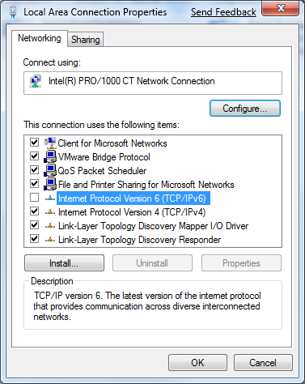

Curso IPv6
Casos prácticos
Los sistemas operativos
TODO: screenshots de cada uno de los SO
- Windows xp
- Windows vista/7
- Mac OS
- Linux
IPV6 en Windows XP
- Instalación desde linea de comandos
- netsh interface ipv6 install
- En conexiones de red a partir del SP1
Windows >= Vista, Server >= 2008 || Mac OS X

Solaris
- Comandos similares en toda la familia Unix
ifconfig lo0 inet6 plumb
route add -inet6 ::1/128 localhost
ifconfig lo0 inet6 up
Linux
- Requiere el soporte en el kernel como módulo o integrado
- Requiere soporte de los paquetes (es lo habitual en la mayoría de las distribuciones)
wlan0 Link encap:Ethernet HWaddr 00:26:5A:01:CC:69
inet addr:192.168.1.2 Bcast:192.168.1.255 Mask:255.255.255.0
inet6 addr: 2001:470:1f0a:1f2c:226:5aff:fe01:cc69/64 Scope:Global
inet6 addr: fe80::226:5aff:fe01:cc69/64 Scope:Link
UP BROADCAST RUNNING MULTICAST MTU:1500 Metric:1
RX packets:40488 errors:0 dropped:0 overruns:0 frame:0
TX packets:28501 errors:0 dropped:0 overruns:0 carrier:0
collisions:0 txqueuelen:1000
RX bytes:46686405 (44.5 Mb) TX bytes:3816327 (3.6 Mb)
Linux (II)
- Neigbours
$ ip -6 neigh
fe80::226:18ff:fe9b:c6a1 dev eth1 lladdr 00:26:18:9b:c6:a1 router STALE
- Routes
$ route -A inet6
Kernel IPv6 routing table
Destination Next Hop Flag Met Ref Use If
::1/128 :: Un 0 1 550 lo
2001:470:1f0a:1f2c::/128 :: Un 0 1 0 lo
2001:470:1f0a:1f2c::2/128 :: Un 0 1287446 lo
2001:470:1f0a:1f2c::/64 :: Un 256 0 0 hetunnel
fe80::/128 :: Un 0 1 0 lo
fe80::c0a8:151/128 :: Un 0 1 1449 lo
fe80::226:18ff:fe9b:c6a1/128 :: Un 0 1 1599 lo
fe80::/64 :: U 256 0 0 eth1
fe80::/64 :: Un 256 0 0 hetunnel
ff00::/8 :: U 256 0 0 eth1
ff00::/8 :: U 256 0 0 hetunnel
::/0 :: U 1024 0 0 hetunnel
::/0 :: !n -1 1 9 lo